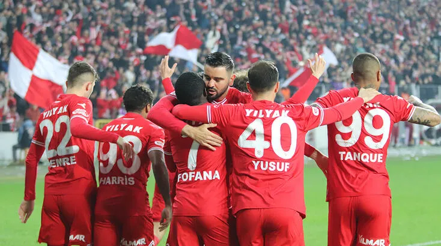
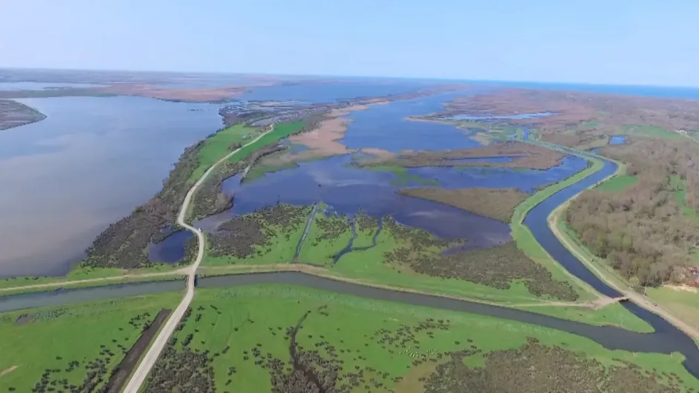

Samsun'un en başarılı futbol takımı olan Samsunspor, tarihinde 23 hafta boyunca Süper Lig'in zirvesinde yer almıştır ve Süper Lig'de en uzun süre lider kalan 7. takımdır. Bu alanda Galatasaray, Fenerbahçe, Beşiktaş, Trabzonspor, Bursaspor ve Sivasspor'dan sonra en başarılı takımdır. Ayrıca Süper Lig tarihinde en fazla puan toplayan 11. takım ve 1. Lig'in en çok şampiyon olan takımı durumundadır. Aynı zamanda altı kez şampiyon olarak yükseldiği Süper Lig'den yedi kez düşerek bu alanda da rekorun sahibidir.
Samsunspor, bir diğer Karadeniz ekibi olan Trabzonspor ile rekabet içerisindedir. Ayrıca kulübün Karadeniz takımlarıyla oynadığı tüm maçlar "Karadeniz derbisi" olarak adlandırılmaktadır. Takımın ilk formaları düz kırmızı ve düz beyaz takım formalardan oluşmaktadır.
Bu sene 1. Ligden Şampiyon Olarak Ayrılarak Tekrar Süper Lige Çıkıp Samsunun Gururu Olmuştur.
Türkiyenin En büyük detalarından biri olan kızılırmak deltası 30km mesafede bir doğa eseridir.delta'da galeriçler ilkbaharda tamamen suyla kaplanıp yaprak döken ormanlardır.Kızılırmak deltası ,Kızılırmak nehrinin taşmasıyla oluşmuş bir deltadır.Samsunun Bafra,engiz ve alaçam ilçeleri arasında bulunur.
Kızılırmak Deltası UNESCO dünya kültür mirası geçici listesine girmiştir
